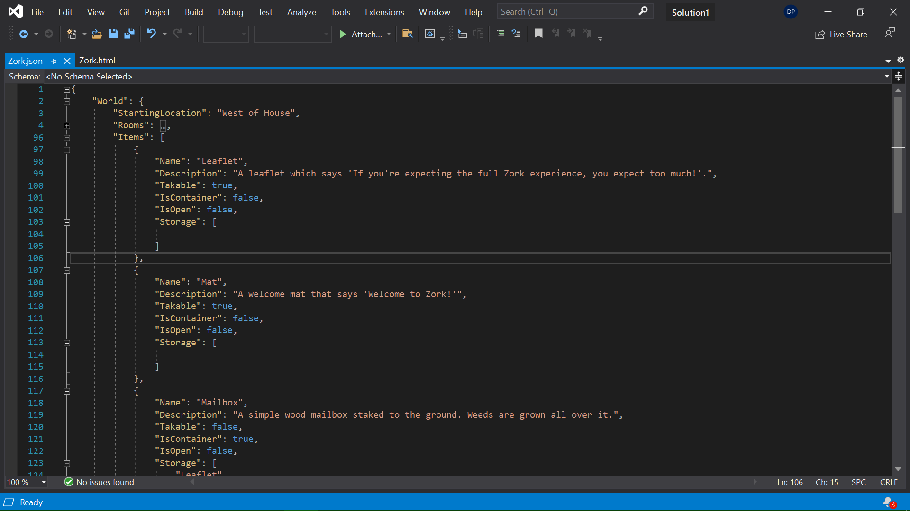
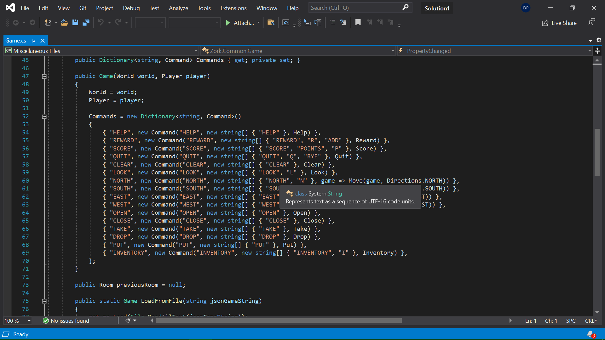

Zork in Unity was a solo, 12 week long project to recreate the text adventure game in Unity. It was not to recreate the entire experience, but it does succeed in recreating the bulk of the beginning experience using JSON files to fill in all of the data. For example, rooms and the content of those rooms is filled in with JSON files. This allows the game to be built entirely outside of the code that runs it.
The Json file Zork is using to generate all of the rooms and items as well as define the starting location.
There's a simplified dictionary of actions that roots through short and long hand versions of commands. The short of it is that the system accounts for interacting with items that are not only in the room, but also within the inventory and if the items are within containers that are appropriately opened or closed. Items that are inside other items can be searched for, opened, taken or placed inside other items without issue.
The commands that can be inputted and how they're parsed.